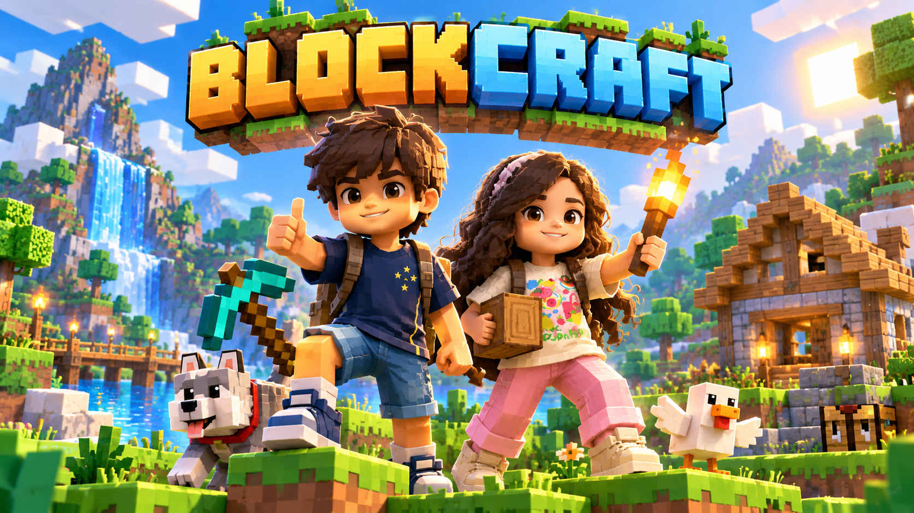

Blockcraft funciona na horizontal. Gire o aparelho para jogar.
Faça uma cópia antes de atualizar ou importar. O mundo continua salvo neste navegador.

Explore o Mundo Aberto, construa no Criativo ou vença 30 fases com inimigos, chefes e câmera imersiva.
Tecla V ou botão 📷 alterna primeira/terceira pessoa. O mundo é salvo neste dispositivo.